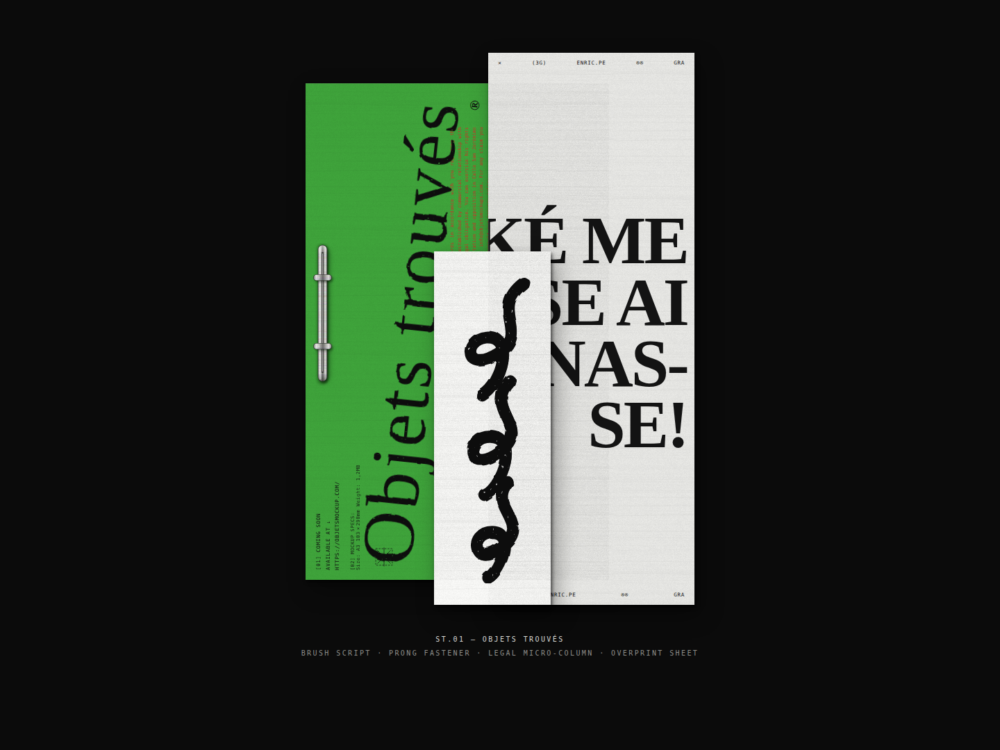
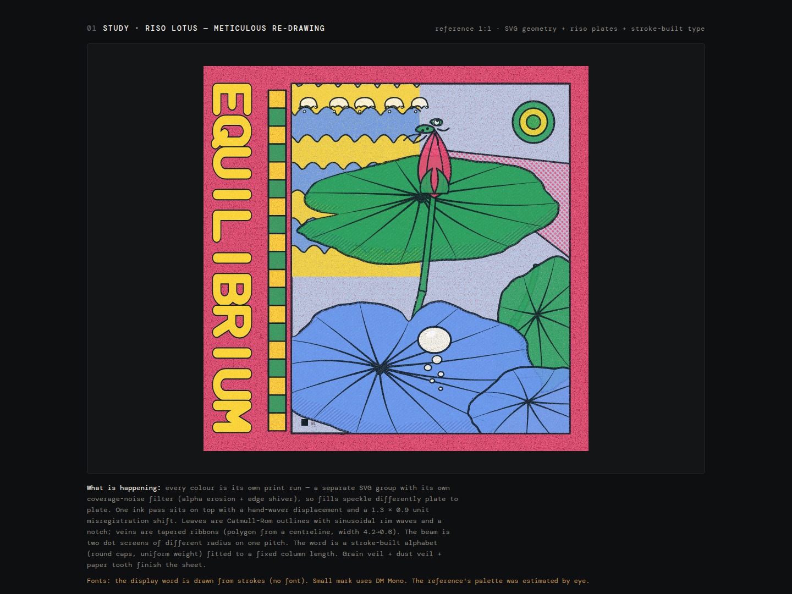
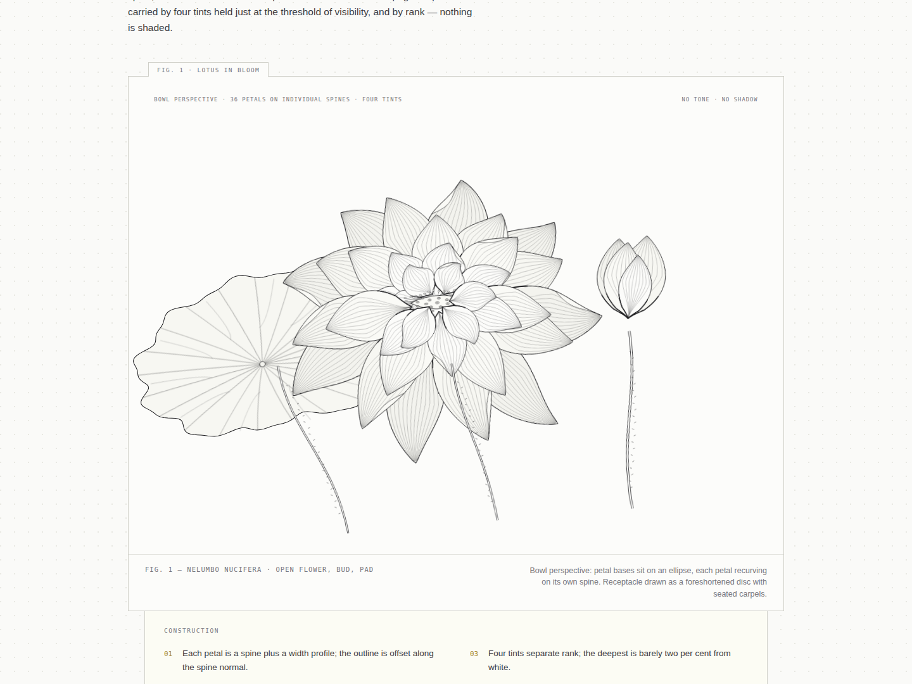
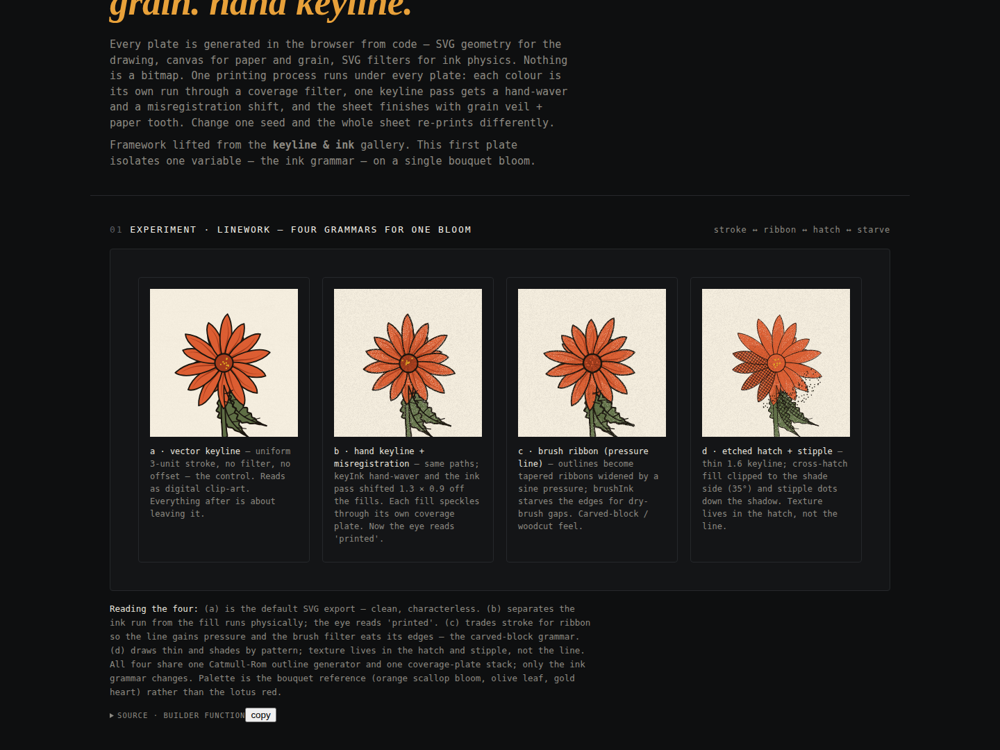

Open →01Printed Matter

Open →02Keyline & Ink

Open →03Fidelity Test

Open →04Material Studies II
Front-end studies. Every texture is generated in the browser from code — SVG geometry, canvas grain, filter physics. Nothing is a bitmap.

Open →
Open →
Open →
Open →